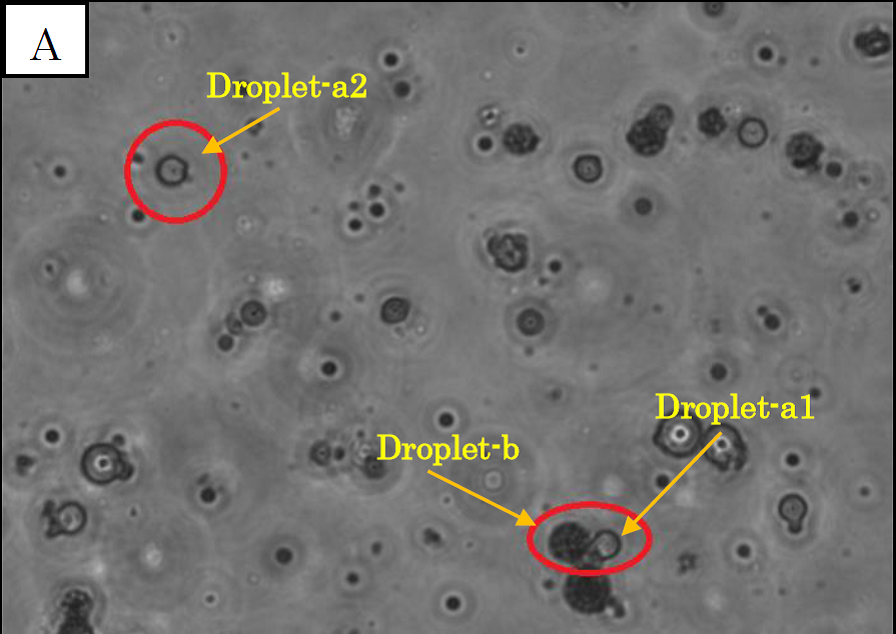
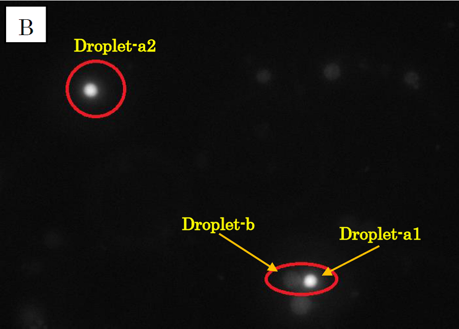
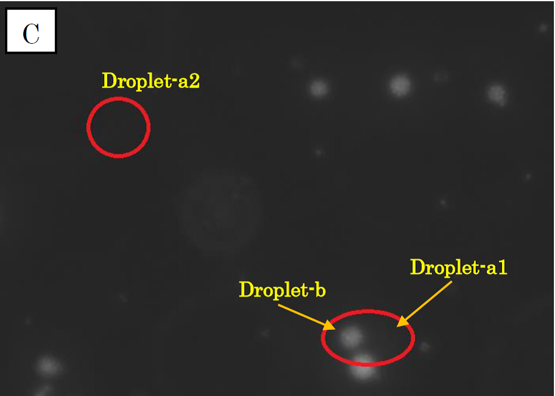
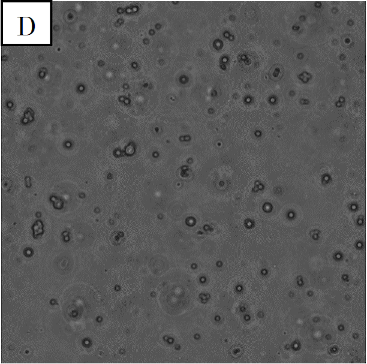
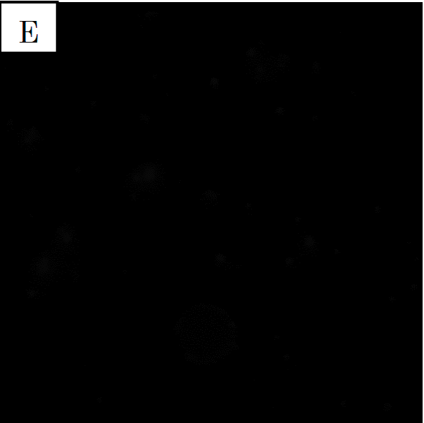
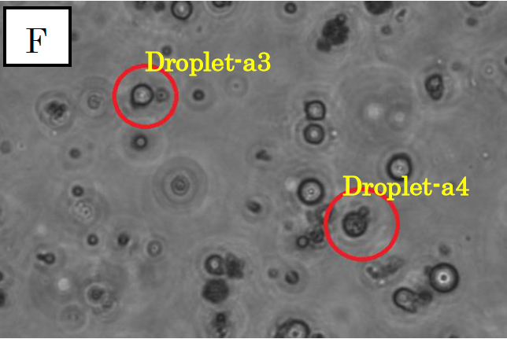
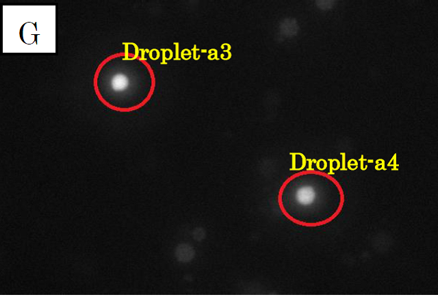
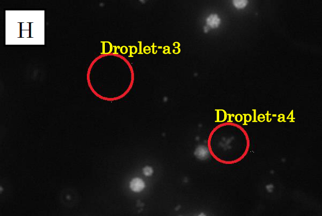

Our first goal in this project was to make two kinds of droplets: one kind of droplet which contains calcium indicator (fluo3) and EDTA in solution C1, and the other which contains fluorescent beads charged with calcium ions in solution C2. Then we made two solutions, D1 and D3. Solution D1 is the mixture of solutions C1 and C2 and ionomycin. Solution D3 is the mixture of solution C1 and ionomycin. In solution D1 and D3, we were able to make these droplets and observe them as shown in the following photographs.
The second goal was to observe movement of calcium ions from the droplets made from C2 to the droplets made from C1, owing to the law of entropy increase. We successfully confirmed the movement by microscope photographs taken in the bright field and two different excitation lights. It is known that the fluorescent beads in C1 shine in the red excitation light and that the calcium indicator combined with calcium ions shines in the green excitation light.



Figure 1.
Microscope photograph of droplets in D1 of 100-fold dilution.
Panel A is a picture taken in the bright field.
Panel B is in the green excitation light.
Panel C is in the red excitation light.
Observation of D1
In panel A of figure 1, which was taken in the bright field, many globular droplets were observed. Especially, we took attention to the droplets in red circles. (Droplet-a1, Droplet-a2, Droplet-b) Two types of droplets can be seen, those inside of which is white (Droplet-a1, Droplet-a2) and those inside of which is black (Droplet-b). The former is called white type and the latter black type. In panel B, which was taken in the green excitation light, Droplet-a1 and Droplet-a2 shine so brightly. On the other hand, in panel C, which was taken in the red excitation light, Droplet-b shines, and Droplet-a1 and Droplet-a2 do not shine. So it is certain that Droplet-b (black type droplet) contains fluorescent beads, and that Droplet-a1 and Droplet-a2 (white type droplets) contain calcium indicator with calcium ions.
In panel B, Droplet-b and other black type droplets slightly shine. This is probably because the density of fluorescent beads is so high that they are slightly excited by the green excitation light.


Figure 2. Microscope photograph of droplets in D3 of 100-fold dilution.
Panel D is a picture taken in the bright field. Panel E is a picture taken in the green excitation light.
Observation of D3
In panel D of figure 2, which was taken in the bright field, many globular droplets were observed. These droplets are similar to the white type droplets observed in panel A of figure 1. In panel E, which was taken in the green excitation light, droplets scarcely shine. So it can be confirmed that the droplets from solution C1, which contain calcium indicator, do not contain calcium ions.
From these results, we can conclude that calcium ions in the white type droplets in D1 came from the black type droplets.
From these data, we can make sure the movement of calcium ion from the black type droplets to the white type droplets by ionomycin.



Figure 3.
Microscope photographs of droplets in D1
Panels F, G and H in figure 3 are images of water droplets in solution D1, similar to panels A~C in figure 1. Panel F is a picture taken in the bright field, G is in the green excitation light, and H is in the red excitation light.
In panel F, which was taken in the bright field, many globular droplets were observed. Especially, we took attention to the droplets in red circles. (Droplet-a3 and Droplet-a4）Droplet-a3 is a white type droplet. On the other hand, Droplet-a4 looks a little black and cloudy. In panel G, which was taken in the green excitation light, Droplet-a3 and Droplet-a4 shine. Thus, it is confirmed that Ca2+ exist in these droplets. On the other hand, in panel H, which was taken in the red excitation light, Droplet-a3 does not shine and Droplet-a4 looks a little shining.
Considering the above result, we conclude that Droplet-a4 included a few fluorescent beads. We conjecture that a droplet from C1, which contains fluo3, and a droplet from C2 were fused and generated Droplet-a4. It was because two kinds of droplet were mixed at high density.